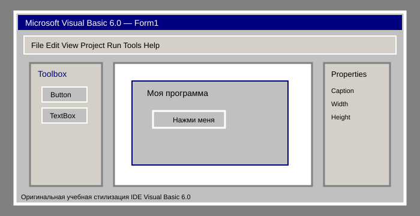
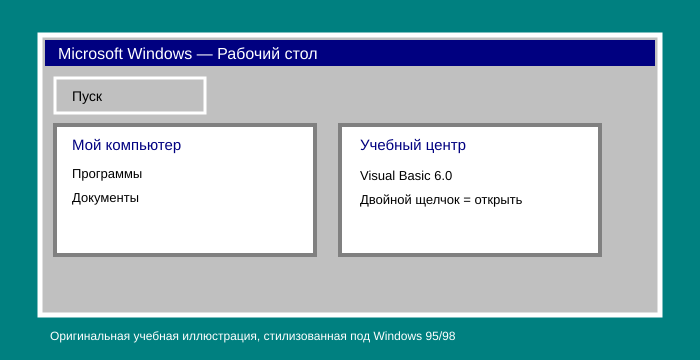
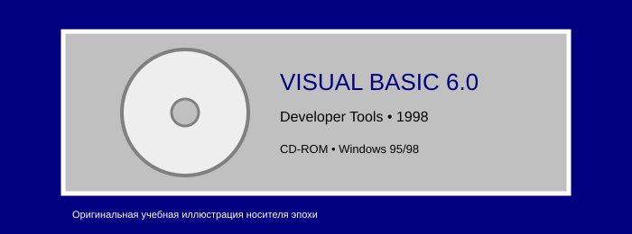
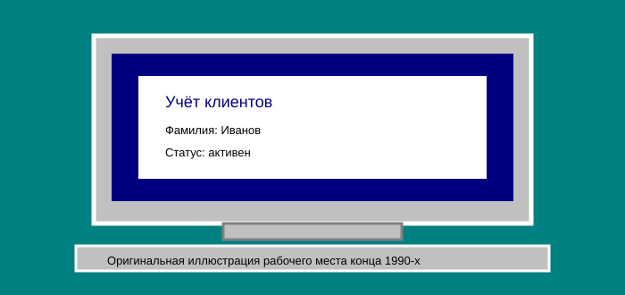
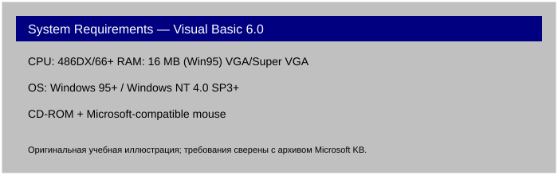

Visual Basic 6.0
Соберите Windows-приложение, пока сосед пишет техническое задание
Visual Basic — язык программирования и среда разработки Microsoft для создания Windows-приложений. Практический курс для тех, кто хочет превратить форму, кнопку и немного кода в настоящую прикладную программу.
Смотреть программу курса

1998: год Windows-программиста
Visual Basic 5.0 вышел в 1997 году, Visual Basic 6.0 был представлен в июне 1998 года, а Visual Studio 6.0 стал доступен в сентябре 1998 года. В том же году вышла Windows 98. В 1998 году одновременно присутствуют Windows 98, Visual Basic 6.0 и Visual Studio 6.0, что даёт особенно выразительную технологическую среду.

Почему Visual Basic?
Разработчикам Windows-приложений требовался способ быстрее создавать пользовательские интерфейсы и прикладные программы. Visual Basic связывал визуальное проектирование форм и элементов управления с написанием кода.
Форма
Собираете интерфейс из элементов управления.
Событие
Нажатие кнопки запускает обработчик — программа реагирует на действия пользователя.
Данные
VB6 получил развитые средства работы с данными и корпоративными источниками.
RAD
Microsoft позиционировала Visual Basic как инструмент быстрой разработки приложений.
Программа курса
| Занятие | Что делаем |
|---|---|
| 01 | Первая форма |
| 02 | Кнопки, поля и меню |
| 03 | Обработка событий |
| 04 | Работа с данными |
| 05 | ActiveX-компоненты |
| 06 | Сборка и запуск приложения |
Кому это пригодится?

Офис. Учёба. Малый бизнес.
Если вам нужна собственная программа для учёта клиентов, товаров или документов, Visual Basic предлагает практический путь от формы до работающего приложения.
Образ пользователя — вымышленный; исторические свойства инструмента основаны на источниках проекта.
А ваш компьютер готов?

| Требование VB6 Professional | Минимум |
|---|---|
| Процессор | 486DX/66 MHz или выше |
| ОС | Windows 95+ или Windows NT 4.0 SP3+ |
| Память | 16 MB для Windows 95; 32 MB рекомендовано |
| Экран | VGA или Super VGA |
| Дополнительно | CD-ROM и мышь |
Запишитесь на курс
Принесите мышь. Остальное мы объясним.
Записаться на курс Свободные места: уточняются